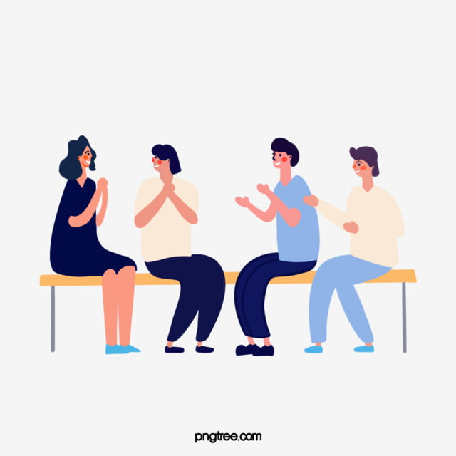
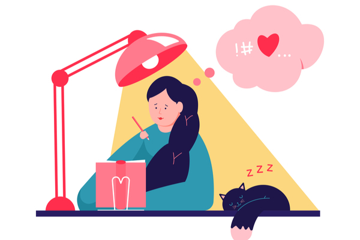
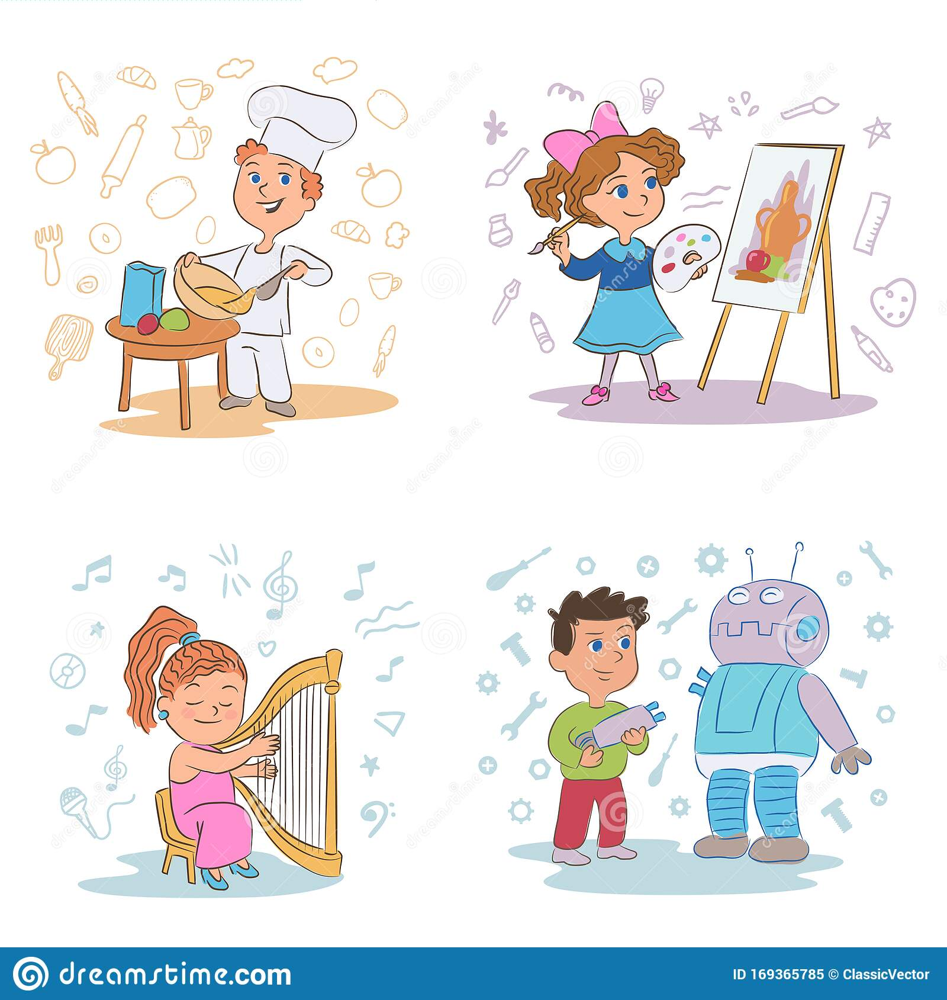
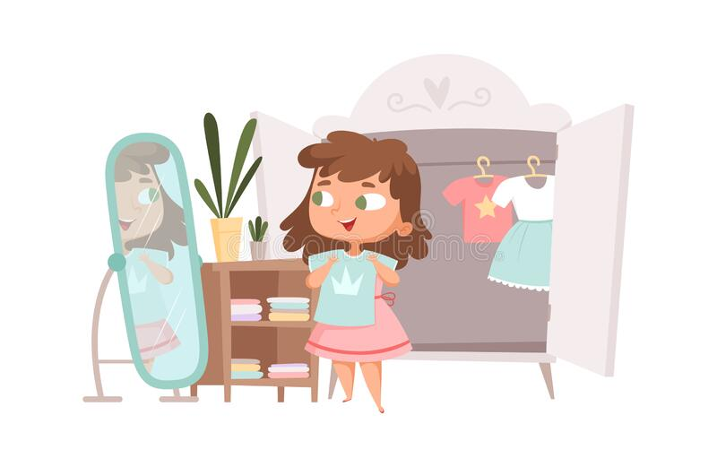
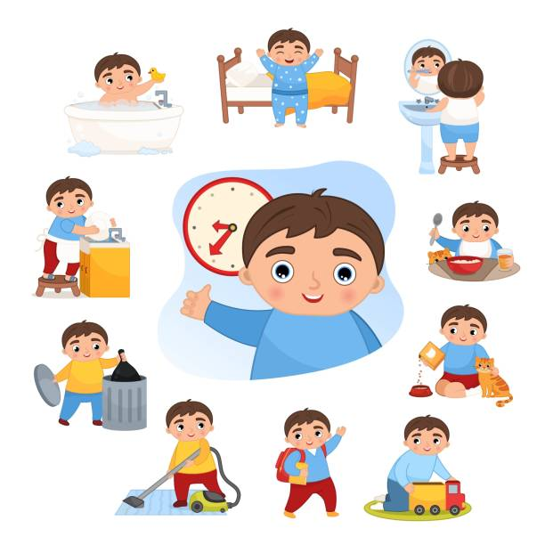
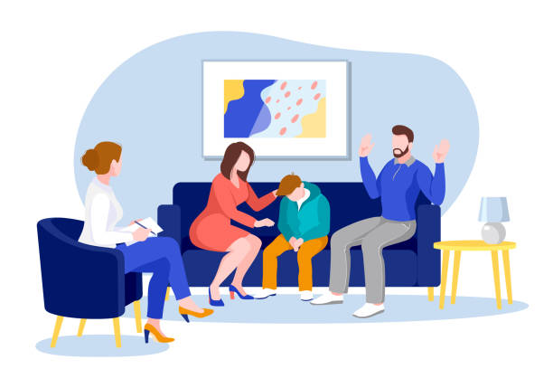

1. Rodeate de personas positivas, que te hagan sonreír y olvidarte de tu enfermedad por algunos momentos.
2. Mantené un estilo de vida saludable: tené una alimentación equilibrada, ejercitate en la medida de lo posible, descansá lo suficiente.

3. Salí a caminar o andar en bicicleta, hacé elongaciones.

4. Consultá con tu médico sobre alguna terapia alternativa como acupuntura o yoga.

5. Llevar un diario íntimo y escribir tus sentimientos es una excelente manera de descargar tus emociones.
6. Inscribite en algún curso para dispersarte; pintura, taller literario, en fin, cualquier actividad que te ayude a quitar tu pensamiento de la enfermedad.
7. Vestite de manera cómoda pero que a la vez te haga sentir bien con vos misma. En aquellos días en los que te sientas mal, maquillate que te hará lucir y sentir mejor.
8. Intentá llevar una rutina diaria, ya sea la de siempre o una nueva. En lo posible mantené tus actividades de siempre.
9. Der ser necesario, pedí ayuda profesional. Hacer terapia familiar puede ayudar a tus hijos.
10. Hablá con personas que hayan atravesado la enfermedad. Nadie mejor que ellos para poder comprenderte y aconsejarte.